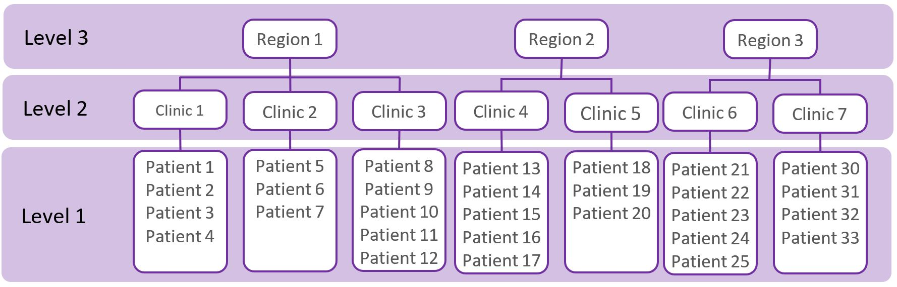
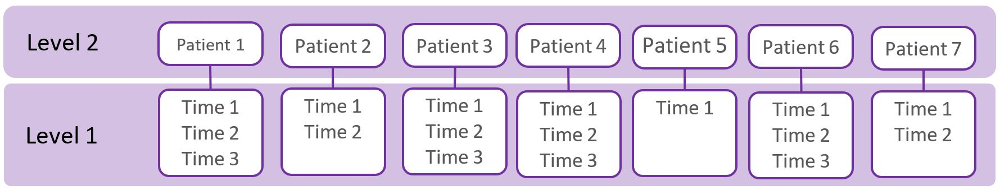

Regressions 4: Multilevel (Mixed) Models
Topic: What are multilevel models, when they should be used, and sample size considerations.
Introduction
Multilevel models are needed to analyze data that has a hierarchical or clustered structure, such as patients treated by the same clinic, or drug levels in the same patient at multiple times. Multi-level models might also be called, mixed models, mixed-effects models, random-effects models, hierarchical models, or split-plot designs.
When Are Multilevel Models Used?
A common assumption of ‘standard’ statistical methods (e.g. t-tests, ANOVAs, regressions) is that observations (e.g. patients) are independent of each other. This assumption is violated when observations (e.g. patients) have a ‘hierarchy’, ‘clustered’, or ‘nested’ structure (as shown in the figure below) because the observations are correlated. For example, the figure below shows a ‘three-level’ data structure, whereby patients are nested within clinics, and clinics are nested within regions. Patients treated in the same clinic may be more alike with each other compared to patients seen in other clinics and are therefore positively correlated. Likewise, clinics in the same region may be more alike compared to clinics in different regions.

Multilevel data structures also arise in longitudinal studies where multiple observations of individuals are made over time (as shown in the figure below). The observations from the same individual are more alike than observations from another patient, and are therefore correlated.

What are Multilevel Models?
When working with multilevel data, the existence of data hierarchies must be taken into account in the analysis; this is accomplished by using multilevel models. When data is correlated, using standard statistical methods (e.g. t-tests, ANOVAs, regressions) is not appropriate and will lead to an inappropriate estimates of standard errors, which in turn will lead to errors in statistical inference, such as p-values smaller than they really should be. The magnitude of the bias will be associated with how similar the observations are within a given cluster, this is described by the ‘design effect’ (explained below). An additional problem with ignoring the multilevel structure of the data is that we may miss important relationships involving each level in the data. For example, by not including information about the hospital we may miss important variables at the hospital level that help to explain outcomes at the patient level.
Multilevel modelling can be conducted using R (through the lme4 or nlme packages), SAS (using proc mixed or glimmix), STATA (using the mixed or melogit commands) and SPSS (using the MIXED command). These models are quite complex and consultation with a statistician is strongly recommended.
Sample Size Considerations
Special sample size formulas and computer programs are available for hierarchical data structures. The STATA clsampsi command may be helpful, though working with a statistician is advisable. Simulations for sample size estimates may also be needed.
The statistical power when working with clustered data may be substantially lower compared to a similarly-sized non-clustered data; that is, clustering makes it harder to detect differences. It is harder to detect differences when the ‘design effect’ is higher.
Design Effect = 1 + \(\rho\) (m - 1)
m = average cluster size (e.g. group size),
\(\rho\) = intra-cluster correlation (ICC); i.e. the correlation among participants within a cluster, or the proportion of overall variation in the outcome that can be attributable to clusters.
The design effect is small when the group size and ICC is small. Generally, increasing the number of clusters offers a greater increase in power than increasing the number of individuals per cluster. The existing literature on your target population and intervention should be used to estimate your ICC. The ICC tends to be larger for knowledge and attitudes, smaller for behaviors, and even smaller for physiologic measures. As a very general guide, for health-related outcomes the ICC values may be (Murray 2016):
- 0.00 - 0.05 for large aggregates (such as hospitals, schools, worksites) - 0.05 - 0.25 for small aggregates (such as departments, classrooms) - 0.25 - 0.75 for very small aggregates (such as families, spouse pairs)
References and Further Readings
Field A (2017). Discovering statistics using IBM SPSS statistics (5th edition). Sage.
Finch WH, Bolin JE, Kelley K. (2019). Multilevel modeling using R (2nd ed). Crc Press.
West BT, Welch KB, Galecki AT (2014). Linear mixed models: a practical guide using statistical software (2nd ed). Crc Press.
Murray DM. Pragmatic and Group-Randomized Trials in Public Health and Medicine. National Institutes of Health. 2016. https://prevention.nih.gov/grt